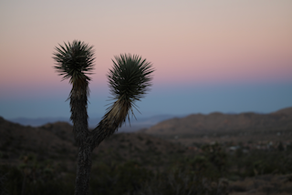

Desert Vista
The vast expanse of the Mojave Desert stretches out with rolling hills and scattered Joshua trees creating a timeless landscape.
Read MoreThe vast expanse of the Mojave Desert stretches out with rolling hills and scattered Joshua trees creating a timeless landscape.
Read MoreMajestic mountain ranges frame the horizon, their rugged peaks standing sentinel over the desert valley below.
Read MoreThe iconic Joshua trees dot the landscape, their twisted branches reaching toward the clear blue sky.
Read MoreAncient rock formations rise from the desert floor, sculpted by centuries of wind and weather.
Read MoreAs the sun dips below the horizon, the sky erupts in a breathtaking display of color. Warm oranges, deep purples, and soft pinks paint the heavens while the desert landscape is bathed in golden twilight.
Read MoreThe high desert environment of Yucca Valley offers a unique ecosystem where diverse flora and fauna have adapted to thrive in challenging conditions.
Read MoreA variety of desert cacti create a striking display of natural architecture.
Read MoreYucca Valley's untamed wilderness offers visitors a chance to disconnect from modern life and reconnect with nature. The vast open spaces and clear desert skies make it an ideal destination for stargazing and reflection.
Read MoreLocated in the heart of the Mojave Desert, Yucca Valley celebrates the raw beauty of the high desert landscape. Surrounded by Joshua Tree National Park and the San Bernardino Mountains, this area offers unparalleled access to California's most stunning desert scenery.
Read More
Native desert plants create a tapestry of green against the sandy terrain.
The panoramic views from Yucca Valley showcase the dramatic contrast between the flat desert floor and the towering mountain ranges that define the horizon.
Read MoreEndless desert views stretch toward distant peaks on the horizon.
Loading Joshua Tree National Park data...